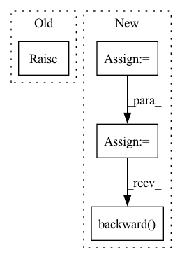

Pattern ID :6313
Before Change
raise NotImplementedError
def backward_G(self):
raise NotImplementedError
def optimize_parameters(self, steps):
raise NotImplementedErrorAfter Change
else:
self.loss_G_recon = self.criterionRecon(self.Sfake_B, self.Tfake_B) * self.opt.lambda_recon
fake = self.Sfake_B
pred_fake = self.netD(fake)
self.loss_G_gan = self.criterionGAN(pred_fake, True, for_discriminator=False) * self.opt.lambda_gan
if self.opt.lambda_distill > 0:
self.loss_G_distill = self.calc_distill_loss() * self.opt.lambda_distill
else:
self.loss_G_distill = 0
self.loss_G = self.loss_G_gan + self.loss_G_recon + self.loss_G_distill
self.loss_G.backward()
def optimize_parameters(self, steps):
raise NotImplementedError
In pattern: SUPERPATTERN
Frequency: 4
Non-data size: 4
Instances Fragment ID: 21900910
Project Name: mit-han-lab/gan-compression
Commit Name: 06742a5fbb7f738bc4910d526608cbd368b787fb
Time: 2020-12-15
Author: lmxyy1999@foxmail.com
File Name: distillers/base_resnet_distiller.py
M Class Name: BaseResnetDistiller
N Class Name: BaseResnetDistiller
M Method Name: backward_G(1)
N Method Name: backward_G(1)
M Parent Class: BaseModel
N Parent Class: BaseModel
M File Name: distillers/base_resnet_distiller.py
N File Name: distillers/base_resnet_distiller.py
M Start Line: 194
M End Line: 194
N Start Line: 174
N End Line: 187
Before Change
self.done_mask_ph = tf.placeholder(tf.float32, [None])
def update(self, ob_no, next_ob_no, re_n, terminal_n):
raise NotImplementedError
After Change
target_q_t = self.__calc_target_vals(next_ob_no, re_n, terminal_n)
q_t = torch.sum(self.q_t_values(ob_no) * torch_one_hot(act_t_ph, self.ac_dim), dim=1)
//////////////////////////////////////////
// TODO compute the Bellman error (i.e. TD error between q_t and target_q_t)
// Note that this scalar-valued tensor later gets passed into the optimizer, to be minimized
// HINT: use reduce mean of huber_loss (from infrastructure/dqn_utils.py) instead of squared error
total_error = torch.mean(huber_loss(q_t, target_q_t))
//////////////////////////////////////////
// train_fn will be called in order to train the critic (by minimizing the TD error)
self.optimizer.zero_grad()
total_error.backward()
nn.utils.clip_grad_norm_(self.q_t_values.parameters(), self.grad_norm_clipping)
self.optimizer.step()
return total_error Fragment ID: 21900958
Project Name: erfanmhi/deep-reinforcement-learning-cs285-pytorch
Commit Name: 5311fe388264d564443693329dbacf832ed6d349
Time: 2020-08-24
Author: mhi.erfan1@gmail.com
File Name: hw4/cs285/critics/dqn_critic.py
M Class Name: DQNCritic
N Class Name: DQNCritic
M Method Name: update(7)
N Method Name: update(5)
M Parent Class: BaseCritic
N Parent Class: BaseCritic
M File Name: hw4/cs285/critics/dqn_critic.py
N File Name: hw4/cs285/critics/dqn_critic.py
M Start Line: 114
M End Line: 114
N Start Line: 76
N End Line: 104
Before Change
// Build the comutation graph.
out = self.layer(x)
raise NotImplementedError()
// TODO: and now? sum()? 1? ...
After Change
self.gen_dummy_layer()
// Build the comutation graph
out = self.layer(x)
t = out.sum()
one = t / t
one.backward()
// one = dummy_function.apply(self.layer(x))
// // to the backward lady.
// one.backward() Fragment ID: 21900953
Project Name: saareliad/ftpipe
Commit Name: ffcd1ff663179d9e19976bf79dce7f9fc7780a06
Time: 2020-01-02
Author: saareliad@campus.technion.ac.il
File Name: pipeline/communication/send_the_layer_not_the_gradeint.py
M Class Name: DummyLayerHelper
N Class Name: DummyLayerHelper
M Method Name: recompute_and_backwards(2)
N Method Name: recompute_and_backwards(2)
M Parent Class: Module
N Parent Class: Module
M File Name: pipeline/communication/send_the_layer_not_the_gradeint.py
N File Name: pipeline/communication/send_the_layer_not_the_gradeint.py
M Start Line: 70
M End Line: 70
N Start Line: 107
N End Line: 112
Before Change
os.makedirs(self.savepath_dict[d])
def train_one_epoch(self, **kwargs):
raise NotImplementedError
def calc_val_loss(self, **kwargs):
raise NotImplementedErrorAfter Change
else:
_metrics = [0] * len(self.metrics_names)
for i, _batch in enumerate(data_loader):
timg = self._get_data_by_name(_batch, "image")
self.optimizer.zero_grad()
loss = self.calc_loss_one_batch(self.model(timg), timg, **kwargs)
loss[0].backward()
// Adjust learning weights
self.optimizer.step()
Fragment ID: 21900963
Project Name: royerlab/cytoself
Commit Name: d6114662473b57f7810ce92d8e438b14d2bf9e42
Time: 2022-05-23
Author: liamiiliil@gmail.com
File Name: cytoself/trainer/basetrainer.py
M Class Name: BaseTrainer
N Class Name: BaseTrainer
M Method Name: train_one_epoch(2)
N Method Name: train_one_epoch(1)
M Parent Class:
N Parent Class:
M File Name: cytoself/trainer/basetrainer.py
N File Name: cytoself/trainer/basetrainer.py
M Start Line: 154
M End Line: 154
N Start Line: 182
N End Line: 202